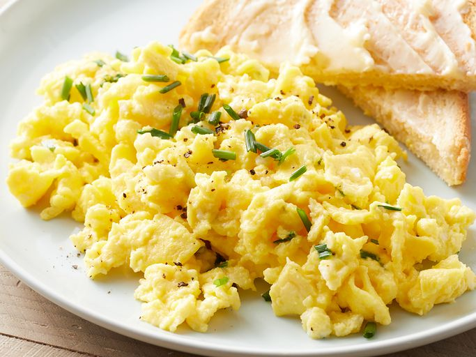

Scrambled Eggs Recipe

Description
Gordon Ramsays famous scrambled eggs!
Ingredients
- 1 tablespoon butter
- 4 large eggs, beaten
- 1/4 cup cottage cheese
- 1 teaspoon chopped fresh chives, or to taste (Optional)
- ground black pepper to taste
Method
- Gather all ingredients.
- Melt butter in a skillet over medium heat. Pour beaten eggs into the skillet; let cook undisturbed until the bottom of the eggs begins to firm, 1 to 2 minutes.
- Stir cottage cheese and chives into eggs and season with black pepper.
- Cook and stir until eggs are nearly set, 3 to 4 minutes more.
Home